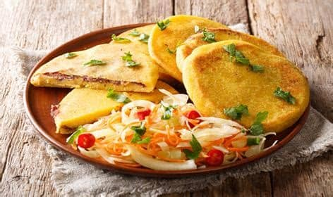
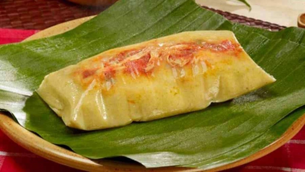

Las pupusas, consideradas Patrimonio Cultural Inmaterial de El Salvador desde 2005, tienen orígenes que se remontan a las cocinas indígenas pipiles. Las pupusas de maíz rellenas con queso, frijol o chicharrón son un símbolo nacional.


Pupusa revuelta: mezcla de queso, frijol y chicharrón.
Pupusa de loroco: flor comestible típica de la región.
Tamal de elote: maíz tierno molido y cocido envuelto en hojas de mazorca.